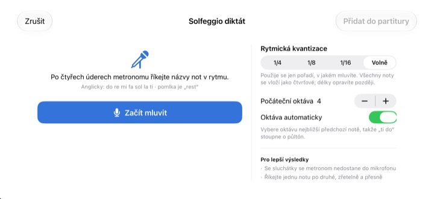
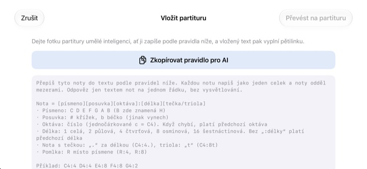

Přestaňte počítat v hlavě.
Poslechněte si to.
Přepište dva takty, na kterých se zadrhnete, a klepněte na přehrávání. Po taktu předtaktí je aplikace zahraje s metronomem, přesně v zapsaném rytmu a výšce.
Všechny funkce jsou zdarma. Pro iPhone a iPad.

Zapište pár not a poslechněte si je
Podržte prst na osnově a posouvejte nahoru nebo dolů, tím měníte tón. Když prst zvednete, nota se vloží. Stiskněte „Hrát“ a po taktu předtaktí uslyšíte výsledek. Ozve se zvuk, zkontrolujte hlasitost.
Zase jste se v půlce taktu ztratili v počítání?
Tečkovaná osminová, za ní šestnáctinová a hned vedle triola. Ťukáte si to do kolena a uprostřed taktu se to rozsype. Večer před zkouškou sboru navíc obvykle nemáte po ruce klavír. Ve StaffSingeru stačí ty dva takty přepsat a uslyšíte přesný rytmus i výšku.
Rytmus a výška přesně podle not
Po taktu předtaktí hudba hraje s klikáním metronomu a právě znějící nota se rozsvítí oranžově. Tempo od 40 do 200 BPM, takt 4/4, 3/4, 2/4, 6/8, 2/2 nebo 3/8.
Noty na stejné době zazní společně jako akord a zapsat můžete až tři hlasy. K dispozici je houslový, altový a basový klíč i předznamenání.

Řekněte názvy not a vzniknou noty
Po čtyřech kliknutích metronomu říkejte v rytmu do re mi a noty se objeví v osnově. Když trefíte dobu, zapíše se i délka: čtvrťové, osminové nebo šestnáctinové. Pomlku označíte slovem rest.
Názvy not vyslovujte anglicky. Řeč se rozpoznává jen v zařízení a neukládá se.

Fotku not dejte AI, výsledek vložte
Klepněte na Zkopírovat pravidlo pro AI, předejte ho AI spolu s fotkou not a vložte text, který vám vrátí. Osnova se vyplní sama. Formát najdete v tabulce níže.
Papírové noty si také můžete vyfotit, nechat je na obrazovce a přepisovat podle nich.

Začnete ve třech krocích
- 1
Vyberte záludné takty
Aplikace se otevře s prázdnou osnovou na dva takty.
- 2
Zapište noty
Stiskněte osnovu, nebo hrajte na klavírní klávesnici.
- 3
Klepněte na přehrávání
Předtaktí a pak přehrávání s metronomem.
Formát textu pro vložení
- C4:4
- C ve 4. oktávě, čtvrťová (jednočárkované c je C4)
- D:8
- Bez oktávy zůstává předchozí
- F#4:8 · Bb4:4
- # je křížek, b je béčko
- E4
- Bez „:hodnoty“ zůstává předchozí
- :1 · :2 · :4 · :8 · :16
- celá, půlová, čtvrťová, osminová, šestnáctinová
- C4:4.
- tečkovaná nota
- C4:8t
- triola
- R:4 · R:8
- pomlky
Tlačítko Zkopírovat pravidlo pro AI v aplikaci zkopíruje přesně tyto pokyny. Noty oddělujte mezerami.
Všechny funkce jsou zdarma
Zdarma
- Zápis do osnovy a klávesnice na dvě oktávy
- Přehrávání s předtaktím a metronomem
- Akordy a tři hlasy
- Předznamenání a tři klíče
- Diktování názvů not hlasem
- Vložení textu a referenční fotka
Podpořte vývojáře
- V Nastavení můžete poslat malé spropitné
- Spropitné neodemyká žádné funkce
Není to předplatné. Každé spropitné je jednorázová platba.
Bez reklam a bez registrace.
Časté otázky
Jak vkládat noty?
Nejdřív na panelu nástrojů vyberte hodnotu a pak stiskněte osnovu v požadované výšce. Dokud držíte prst, tón zní, a po zvednutí se nota vloží. Tlačítkem klávesnice otevřete klavír na dvě oktávy.
Jak udělat akord?
Zapněte na panelu tlačítko Akord a přidávejte noty. Navrství se nad vybranou notu a zazní společně.
Jak opravit notu?
Táhněte notu nahoru nebo dolů pro změnu výšky, do strany pro posun na jinou dobu. U vybrané noty ji tlačítka ♯ ♭ posunou o půltón a tlačítka 8va o oktávu.
Kde změním tempo a takt?
V Nastavení, spolu s klíčem a předznamenáním. Tam také zapnete metronom a předtaktí.
Nic neslyším.
Zkontrolujte tichý režim a hlasitost médií. Pokud neslyšíte jen metronom, ověřte, že je zapnutý v části Pomůcky přehrávání v Nastavení.
Diktování plete noty.
Použijte sluchátka, aby metronom nepronikal do mikrofonu, a říkejte jednu notu zřetelně na každou dobu. Špatnou notu stačí přetáhnout.
Proč aplikace potřebuje fotoaparát?
Jen k vyfocení papírových not, které pak máte na obrazovce pro srovnání. Fotky zařízení neopouštějí. Bez přístupu k fotoaparátu můžete vybrat fotku z knihovny.
Na jakých zařízeních funguje?
Na iPhonu a iPadu se systémem iOS 17 nebo novějším. Rozhraní je navržené na šířku.
Odesílají se někam moje noty nebo hlas?
Ne. Noty, fotky i hlas zůstávají v zařízení a vše funguje bez internetu. Do iCloudu odchází jen anonymní statistiky používání a hlášení o pádech, které pomáhají aplikaci vylepšovat.
Jak vás kontaktovat?
Napište na leeo@kakao.com, odpověď obvykle přijde do 2 až 3 pracovních dnů. Chyby a nápady můžete hlásit i jako issue na GitHubu: M1zz/StaffSinger.
Dotazy nebo připomínky? Napište na leeo@kakao.com.